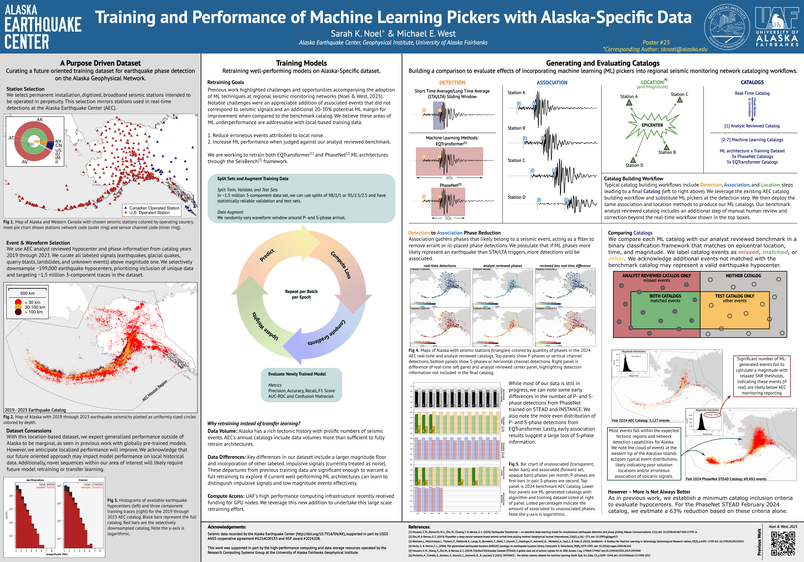
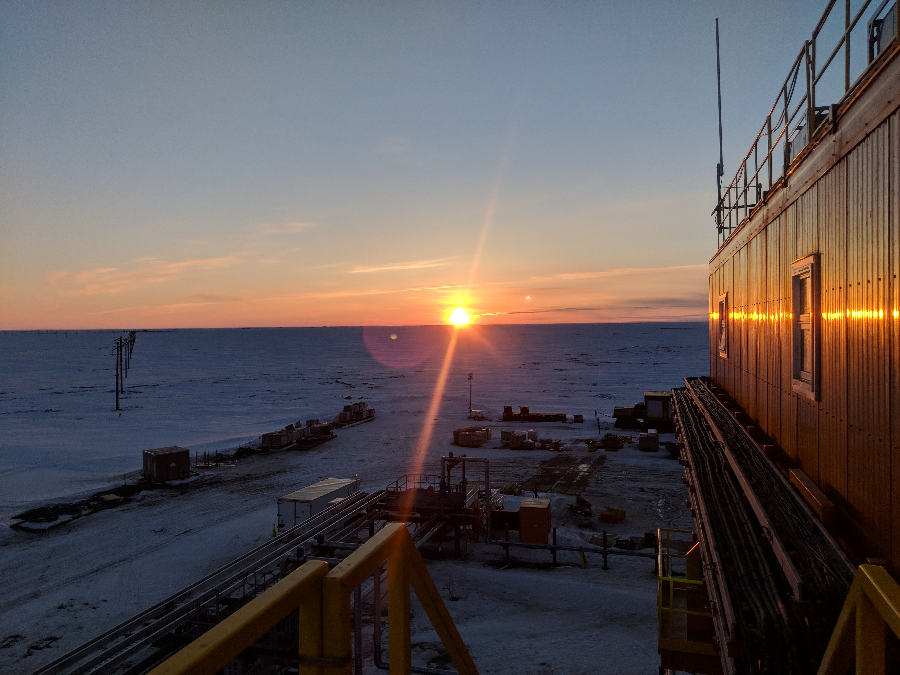
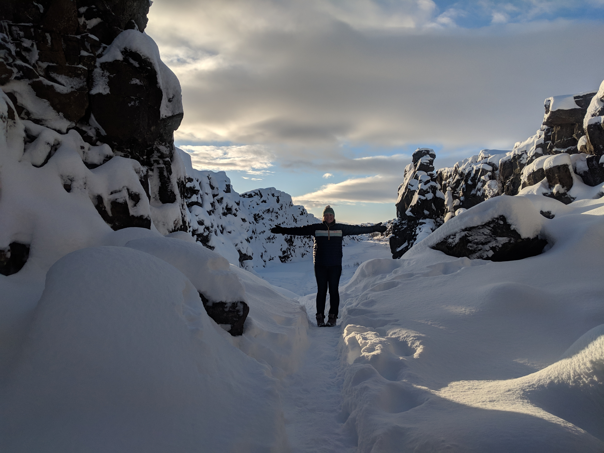

---
layout: full
title: Abstracts & Posters
subtitle:
---				

<!-- Two, Image and Text -->
<section id="two" class="wrapper alt style2">
    <section class="spotlight">
        <div class="image"></div><div class="content">
            <header>
            <h2>Training and Performance of Machine Learning Pickers with Alaska-Specific Data</h2>
            <p>Sarah K. Noel, Michael E. West</p>
            </header>
            <p>Globally pre-trained machine learning (ML) earthquake phase-detection algorithms continue to gain research 
                popularity and are routinely used to generate earthquake catalogs with thousands of additional events. 
                These pre-trained algorithms promise broadscale regional transferability and application in real-time monitoring. 
                In Alaska, however, we find that while globally pre-trained ML models offer improvements over traditional 
                detection methods, these ML models underperform our performance measures when compared to seismic data 
                analysts (Noel & West, 2025). To address observed underperformance, we develop a location-specific training 
                dataset for Alaska. We curate signals from 2019 through 2023 from permanent installation, real-time, seismic 
                stations operating in Alaska and western Canada. We retrain ML architectures and apply our resulting models 
                to the full 2024 calendar year of network data. Additionally, we prepare catalogs using models pre-trained 
                on community datasets. We compare each 2024 catalog to our benchmark Alaska Earthquake Center analyst-reviewed 
                catalog through a binary classification framework. Lastly, we apply a minimum catalog inclusion criteria 
                based on Alaska Earthquake Center analyst review standards, establishing a one-to-one performance comparison. 
                Our approach aims to evaluate the performance differences between training datasets and established ML 
                architectures to develop an earthquake detection approach with appreciable benefits for Alaska.</p>
        </div>
    </section>
    <section class="spotlight">
        <div class="image"></div><div class="content">
            <header>
            <h2>Previous Employment</h2>
            <p><em>"A jack of all trades is a master of none, but often times better than a master of one."</em> —William Shakespear</p>
            </header>
            <p>Food truck to field engineer; view my employemnt history.</p>
        </div>
    </section>
    <section class="spotlight">
        <div class="image"></div><div class="content">
            <h2>About Me</h2>
            <p>Aliquam ut ex ut augue consectetur interdum. Donec hendrerit imperdiet. Mauris eleifend fringilla nullam aenean mi ligula.</p>
        </div>
    </section>
</section>